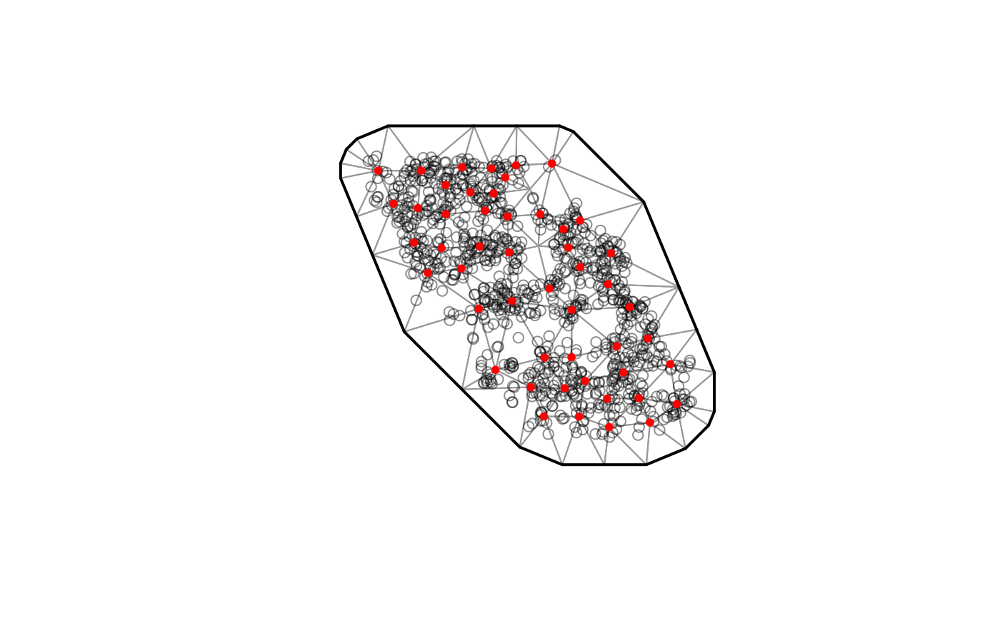

Fit a spatial or spatiotemporal predictive-process GLMM with TMB. Among other uses, this can be useful for (dynamic) species distribution models and relative abundance index standardization.
sdmTMB( formula, data, spde, time = NULL, family = gaussian(link = "identity"), time_varying = NULL, weights = NULL, extra_time = NULL, reml = FALSE, silent = TRUE, multiphase = TRUE, anisotropy = FALSE, control = sdmTMBcontrol(), penalties = NULL, ar1_fields = FALSE, include_spatial = TRUE, spatial_trend = FALSE, spatial_only = identical(length(unique(data[[time]])), 1L), nlminb_loops = 1, newton_steps = 0, mgcv = TRUE, previous_fit = NULL, quadratic_roots = FALSE )
| formula | Model formula. See the Details section below for how to specify
offsets and threshold parameters. For index standardization, you may wish
to include |
|---|---|
| data | A data frame. |
| spde | An object from |
| time | The time column (as character). Leave as |
| family | The family and link. Supports |
| time_varying | An optional formula describing covariates that should be
modelled as a random walk through time. Be careul not to include
covariates (including the intercept) in both the main and time-varying
formula. I.e., at least one should have |
| weights | Optional likelihood weights for the conditional model. Implemented as in glmmTMB. In other words, weights do not have to sum to one and are not internally modified. Can also be used for trials with the binomial family. See Details below. |
| extra_time | Optional extra time slices (e.g., years) to include for interpolation or forecasting with the predict function. See the Details section below. |
| reml | Logical: use REML (restricted maximum likelihood) estimation rather than maximum likelihood? Internally, this adds the fixed effects to the list of random effects to intetgrate over. |
| silent | Silent or include optimization details? |
| multiphase | Logical: estimate the fixed and random effects in phases? Phases are usually faster and more stable. |
| anisotropy | Logical: allow for anisotropy? See |
| control | Optimization control options. See |
| penalties | Optional vector of penalties (priors) on the fixed effects. See the Regularization Details section below. below. |
| ar1_fields | Estimate the spatiotemporal random fields as a stationary AR1 process? |
| include_spatial | Should a separate spatial random field be estimated? If enabled then there will be separate spatial and spatiotemporal fields. |
| spatial_trend | Should a separate spatial field be included in the trend that represents local (time) trends? Requires spatiotemporal data. See http://dx.doi.org/10.1111/ecog.05176 and the spatial trends vignette. |
| spatial_only | Logical: should only a spatial model be fit (i.e. do not
include spatiotemporal random effects)? By default a spatial-only model
will be fit if there is only one unique value in the time column or the
|
| nlminb_loops | How many times to run |
| newton_steps | How many Newton optimization steps to try with
|
| mgcv | Parse the formula with |
| previous_fit | A previously fitted sdmTMB model to initialize the
optimization with. Can greatly speed up fitting. Note that the data and
model must be set up exactly the same way! However, the |
| quadratic_roots | Experimental feature for internal use right now; may
be moved to a branch. Logical: should quadratic roots be calculated? Note:
on the sdmTMB side, the first two coefficients are used to generate the
quadratic parameters. This means that if you want to generate a quadratic
profile for depth, and depth and depth^2 are part of your formula, you need
to make sure these are listed first and that an intercept isn't included.
For example, |
Model description
For now, see the model description vignette for a start. There are also descriptions of particular models in Anderson et al. (2019) and Barnett et al. (2020) (see reference list below).
Offsets
In the model formula, an offset can be included by including + offset in
the model formula (a reserved word). The offset will be included in any
prediction. offset must be a column in data.
Binomial models
Binomial models with more than one trial be specified as in stats::glm():
prob ~ ..., weights = N or with a two-column matrix
cbind(successes,failures) ~ ....
Threshold models
A linear break-point relationship for a covariate can be included via + breakpt(variable) in the formula, where variable is a single covariate
corresponding to a column in data. In this case the relationship is linear
up to a point and then constant.
Similarly, a logistic-function threshold model can be included via + logistic(variable). This option models the relationship as a logistic
function of the 50% and 95% values. This is similar to length- or size-based
selectivity in fisheries, and is parameterized by the points at which f(x) =
0.5 or 0.95. See the vignette.
Note that only a single threshold covariate can be included.
See the threshold vignette.
Forecasting or interpolating
Extra time slices (e.g., years) can be included for interpolation or
forecasting with the predict function via the extra_time argument. The
predict function requires all time slices to be defined when fitting the
model to ensure the various time indices are set up correctly. Be careful if
including extra time slices that the model remains identifiable. For example,
including + as.factor(year) in formula will render a model with no data
to inform the expected value in a missing year. sdmTMB() makes no attempt
to determine if the model makes sense for forecasting or interpolation. The
options time_varying, include_spatial, ar1_fields, time = NULL
provide mechanisms to predict over missing time slices.
Index standardization
For index standardization, you may wish to include 0 + as.factor(year)
(or whatever the time column is called) in the formula. See a basic
example of index standardization in the relevant
package vignette.
Regularization
You can achieve regularization via penalties (priors) on the fixed effect
parameters. The vector of values supplied to the penalties argument
represents standard deviations of normal distributions centered on zero with
one value per fixed effect. These can be used for regularization, e.g.,
Normal(0, 1) for ridge regression. These shoud not include offset terms and
care should be taken if used with splines. You can fit the model once without
penalties and inspect the element head(your_model$tmb_data$X_ij) if you
want to see how the formula is translated to the fixed effect model matrix.
The penalties vector should correspond to the columns of the X_ij matrix.
An element can contain NA if you wish to avoid a penalty/prior on a specific
term (e.g., the intercept).
Main reference/report introducing the package. We plan to write a paper to cite in the near future:
Anderson, S.C., E.A. Keppel, A.M. Edwards, 2019. A reproducible data synopsis for over 100 species of British Columbia groundfish. DFO Can. Sci. Advis. Sec. Res. Doc. 2019/041. vii + 321 p. https://www.dfo-mpo.gc.ca/csas-sccs/Publications/ResDocs-DocRech/2019/2019_041-eng.html
Reference for local trends:
Barnett, L.A.K., E.J. Ward, S.C. Anderson. Improving estimates of species distribution change by incorporating local trends. In press at Ecography. https://doi.org/10.1111/ecog.05176
d <- subset(pcod, year >= 2011) # subset for example speed pcod_spde <- make_mesh(d, c("X", "Y"), cutoff = 30) # a coarse mesh for example speed plot(pcod_spde)# Tweedie: m <- sdmTMB(density ~ 0 + depth_scaled + depth_scaled2 + as.factor(year), data = d, time = "year", spde = pcod_spde, family = tweedie(link = "log")) print(m)#> Spatial model fit by ML ['sdmTMB'] #> Formula: density ~ 0 + depth_scaled + depth_scaled2 + as.factor(year) #> Time column: "year" #> SPDE: pcod_spde #> Data: d #> Family: tweedie(link = 'log') #> coef.est coef.se #> depth_scaled -1.58 0.20 #> depth_scaled2 -1.11 0.10 #> as.factor(year)2011 3.67 0.34 #> as.factor(year)2013 3.87 0.34 #> as.factor(year)2015 3.78 0.34 #> as.factor(year)2017 3.05 0.35 #> #> Matern range parameter: 14.29 #> Dispersion parameter: 14.16 #> Spatial SD (sigma_O): 2.65 #> Spatiotemporal SD (sigma_E): 1.84 #> ML criterion at convergence: 2955.205#> term estimate std.error conf.low conf.high #> 1 depth_scaled -1.576332 0.19996487 -1.968256 -1.1844078 #> 2 depth_scaled2 -1.108996 0.09901708 -1.303066 -0.9149263 #> 3 as.factor(year)2011 3.671943 0.34094724 3.003698 4.3401871 #> 4 as.factor(year)2013 3.873057 0.33816705 3.210262 4.5358527 #> 5 as.factor(year)2015 3.781371 0.33823581 3.118441 4.4443008 #> 6 as.factor(year)2017 3.051184 0.35024463 2.364717 3.7376510#> term estimate std.error conf.low conf.high #> 1 sigma_O 2.649715 3.5506223 0.1916847 36.62779 #> 2 sigma_E 1.835313 2.3634025 0.1470909 22.89996 #> 3 range 14.286693 21.0330734 0.7975918 255.90736 #> 4 phi 14.155988 0.6919039 12.8628115 15.57918# Run extra optimization steps to help convergence: m1 <- run_extra_optimization(m, nlminb_loops = 0, newton_steps = 1) max(m$gradients)#> [1] 0.000457957#> [1] 1.466514e-09# Bernoulli: pcod_binom <- d pcod_binom$present <- ifelse(pcod_binom$density > 0, 1L, 0L) m_bin <- sdmTMB(present ~ 0 + as.factor(year) + depth_scaled + depth_scaled2, data = pcod_binom, time = "year", spde = pcod_spde, family = binomial(link = "logit")) print(m_bin)#> Spatial model fit by ML ['sdmTMB'] #> Formula: present ~ 0 + as.factor(year) + depth_scaled + depth_scaled2 #> Time column: "year" #> SPDE: pcod_spde #> Data: pcod_binom #> Family: binomial(link = 'logit') #> coef.est coef.se #> as.factor(year)2011 0.33 0.47 #> as.factor(year)2013 1.49 0.48 #> as.factor(year)2015 1.16 0.47 #> as.factor(year)2017 0.27 0.47 #> depth_scaled -2.15 0.28 #> depth_scaled2 -1.63 0.17 #> #> Matern range parameter: 27.46 #> Spatial SD (sigma_O): 2.51 #> Spatiotemporal SD (sigma_E): 0.22 #> ML criterion at convergence: 470.433# Bernoulli (3 trials for all observations): pcod_binom <- d pcod_binom$present <- ifelse(pcod_binom$density > 0, 1L, 0L) m_bin <- sdmTMB(present ~ 0 + as.factor(year) + depth_scaled + depth_scaled2, data = pcod_binom, time = "year", spde = pcod_spde, size = 3, family = binomial(link = "logit"))#> Error in sdmTMB(present ~ 0 + as.factor(year) + depth_scaled + depth_scaled2, data = pcod_binom, time = "year", spde = pcod_spde, size = 3, family = binomial(link = "logit")): unused argument (size = 3)#> Spatial model fit by ML ['sdmTMB'] #> Formula: present ~ 0 + as.factor(year) + depth_scaled + depth_scaled2 #> Time column: "year" #> SPDE: pcod_spde #> Data: pcod_binom #> Family: binomial(link = 'logit') #> coef.est coef.se #> as.factor(year)2011 0.33 0.47 #> as.factor(year)2013 1.49 0.48 #> as.factor(year)2015 1.16 0.47 #> as.factor(year)2017 0.27 0.47 #> depth_scaled -2.15 0.28 #> depth_scaled2 -1.63 0.17 #> #> Matern range parameter: 27.46 #> Spatial SD (sigma_O): 2.51 #> Spatiotemporal SD (sigma_E): 0.22 #> ML criterion at convergence: 470.433# Gaussian: pcod_gaus <- subset(d, density > 0 & year >= 2013) pcod_spde_gaus <- make_mesh(pcod_gaus, c("X", "Y"), cutoff = 30) m_pos <- sdmTMB(log(density) ~ 0 + as.factor(year) + depth_scaled + depth_scaled2, data = pcod_gaus, time = "year", spde = pcod_spde_gaus) print(m_pos)#> Spatial model fit by ML ['sdmTMB'] #> Formula: log(density) ~ 0 + as.factor(year) + depth_scaled + depth_scaled2 #> Time column: "year" #> SPDE: pcod_spde_gaus #> Data: pcod_gaus #> Family: gaussian(link = 'identity') #> coef.est coef.se #> as.factor(year)2013 3.63 0.12 #> as.factor(year)2015 3.68 0.13 #> as.factor(year)2017 3.36 0.15 #> depth_scaled -0.21 0.14 #> depth_scaled2 -0.39 0.10 #> #> Matern range parameter: 0.22 #> Dispersion parameter: 1.35 #> Spatial SD (sigma_O): 0.01 #> Spatiotemporal SD (sigma_E): 0.01 #> ML criterion at convergence: 599.014# With splines via mgcv. # Make sure to pre-specify an appropriate basis dimension (`k`) since # the smoothers are not penalized in the current implementation. # See ?mgcv::choose.k m_gam <- sdmTMB(log(density) ~ 0 + as.factor(year) + s(depth_scaled, k = 4), data = pcod_gaus, time = "year", spde = pcod_spde_gaus) print(m_gam)#> Spatial model fit by ML ['sdmTMB'] #> Formula: log(density) ~ 0 + as.factor(year) + s(depth_scaled, k = 4) #> Time column: "year" #> SPDE: pcod_spde_gaus #> Data: pcod_gaus #> Family: gaussian(link = 'identity') #> coef.est coef.se #> as.factor(year)2013 3.45 0.11 #> as.factor(year)2015 3.60 0.12 #> as.factor(year)2017 3.23 0.14 #> s(depth_scaled).1 1.04 0.26 #> s(depth_scaled).2 -0.61 0.61 #> s(depth_scaled).3 -0.90 0.30 #> #> Matern range parameter: 0.21 #> Dispersion parameter: 1.32 #> Spatial SD (sigma_O): 0.01 #> Spatiotemporal SD (sigma_E): 0.01 #> ML criterion at convergence: 589.528# \donttest{ # Fit a spatial only model: m <- sdmTMB( density ~ depth_scaled + depth_scaled2, data = d, spde = pcod_spde, family = tweedie(link = "log")) print(m)#> Spatial model fit by ML ['sdmTMB'] #> Formula: density ~ depth_scaled + depth_scaled2 #> Time column: NULL #> SPDE: pcod_spde #> Data: d #> Family: tweedie(link = 'log') #> coef.est coef.se #> (Intercept) 3.67 0.30 #> depth_scaled -1.49 0.19 #> depth_scaled2 -1.00 0.09 #> #> Matern range parameter: 0.03 #> Dispersion parameter: 14.78 #> Spatial SD (sigma_O): 1676.98 #> Spatiotemporal SD (sigma_E): not estimated #> ML criterion at convergence: 2974.181# Spatial-trend example: m <- sdmTMB(density ~ depth_scaled, data = d, spde = pcod_spde, family = tweedie(link = "log"), spatial_trend = TRUE, time = "year") tidy(m, effects = "ran_par")#> term estimate std.error #> 1 sigma_O 2.5786216 1.3024488 #> 2 sigma_E 0.8739983 0.5275146 #> 3 sigma_Z 0.3300048 0.1877423 #> 4 range 24.7819984 17.9633699 #> 5 phi 15.5051233 0.7261014# Time-varying effects of depth and depth squared: m <- sdmTMB(density ~ 0 + as.factor(year), time_varying = ~ 0 + depth_scaled + depth_scaled2, data = d, time = "year", spde = pcod_spde, family = tweedie(link = "log")) print(m)#> Spatial model fit by ML ['sdmTMB'] #> Formula: density ~ 0 + as.factor(year) #> Time column: "year" #> SPDE: pcod_spde #> Data: d #> Family: tweedie(link = 'log') #> coef.est coef.se #> as.factor(year)2011 4.01 0.32 #> as.factor(year)2013 3.68 0.30 #> as.factor(year)2015 4.03 0.31 #> as.factor(year)2017 3.42 0.34 #> #> Time-varying parameters: #> coef.est coef.se #> depth_scaled-2011 -0.78 0.14 #> depth_scaled-2013 -0.75 0.13 #> depth_scaled-2015 -0.73 0.14 #> depth_scaled-2017 -1.02 0.24 #> depth_scaled2-2011 -1.76 0.25 #> depth_scaled2-2013 -0.79 0.13 #> depth_scaled2-2015 -1.53 0.21 #> depth_scaled2-2017 -2.07 0.34 #> #> Matern range parameter: 6.23 #> Dispersion parameter: 13.78 #> Spatial SD (sigma_O): 5.23 #> Spatiotemporal SD (sigma_E): 3.65 #> ML criterion at convergence: 2943.572# See the b_rw_t estimates; these are the time-varying (random walk) effects. # These could be added to tidy.sdmTMB() eventually. summary(m$sd_report)[1:19,]#> Estimate Std. Error #> b_j 4.0090872 0.31751960 #> b_j 3.6751811 0.30409948 #> b_j 4.0278776 0.31422339 #> b_j 3.4204687 0.33726406 #> ln_tau_O -2.1297412 13.60884306 #> ln_tau_E -1.7704078 13.59323378 #> ln_kappa -0.7894472 6.89097094 #> thetaf 0.3172205 0.06427312 #> ln_phi 2.6232966 0.04895034 #> ln_tau_V -1.5247832 0.84952336 #> ln_tau_V -0.2008949 0.45430295 #> b_rw_t -0.7777383 0.14304717 #> b_rw_t -0.7505321 0.12626466 #> b_rw_t -0.7338111 0.13539467 #> b_rw_t -1.0153736 0.23736181 #> b_rw_t -1.7649953 0.25180630 #> b_rw_t -0.7903728 0.12822862 #> b_rw_t -1.5261893 0.21146329 #> b_rw_t -2.0694461 0.34416970# Linear breakpoint model on depth: m_pos <- sdmTMB(log(density) ~ 0 + as.factor(year) + breakpt(depth_scaled) + depth_scaled2, data = pcod_gaus, time = "year", spde = pcod_spde_gaus)#> Warning: The model may not have converged: non-positive-definite Hessian matrix.#> Spatial model fit by ML ['sdmTMB'] #> Formula: log(density) ~ 0 + as.factor(year) + breakpt(depth_scaled) + #> Formula: depth_scaled2 #> Time column: "year" #> SPDE: pcod_spde_gaus #> Data: pcod_gaus #> Family: gaussian(link = 'identity') #> coef.est coef.se #> as.factor(year)2013 4.24 NaN #> as.factor(year)2015 4.30 NaN #> as.factor(year)2017 4.03 NaN #> depth_scaled2 0.21 NaN #> depth_scaled-slope 1.35 NaN #> depth_scaled-breakpt -0.72 NaN #> #> Matern range parameter: 0.21 #> Dispersion parameter: 1.33 #> Spatial SD (sigma_O): 0.01 #> Spatiotemporal SD (sigma_E): 0.01 #> ML criterion at convergence: 592.503# }